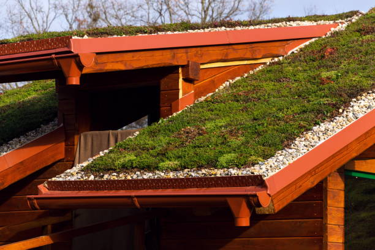
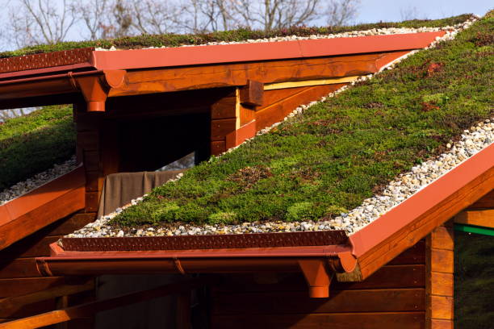

Transforme seu espaço com verde sustentável
Saiba MaisQuem somos
Desde 2008, a Ciclo Verde tem transformado centros urbanos ao integrar o verde e promover soluções sustentáveis para a vida nas cidades.
A empresa começou sua trajetória desenvolvendo sistemas de jardins verticais leves e fáceis de instalar, ajudando a popularizar essa tecnologia no Brasil. Desde então, já forneceu mais de 300.000 de metros quadrados de jardins verticais e telhados verdes em todo o território nacional.
Com criatividade e compromisso com o meio ambiente, a Ciclo Verde se dedica a criar produtos e serviços que ajudam a mitigar os impactos causados pela urbanização acelerada, pela poluição e pela falta de planejamento nas grandes metrópoles.
Perguntas frequentes
Como faço a manutenção de um telhado verde e com que frequência ele precisa de cuidados?
A manutenção de um telhado verde envolve a irrigação periódica das plantas, a remoção de ervas daninhas e o monitoramento da drenagem do sistema. Em áreas com clima mais seco, a irrigação pode ser necessária com mais frequência. A manutenção geralmente é mínima, mas deve ser feita ao menos uma vez por estação para garantir a saúde das plantas e a integridade do sistema de drenagem.
Quais tipos de plantas são recomendados para jardins verticais?
As plantas recomendadas para jardins verticais são aquelas que se adaptam bem a ambientes verticais e que não exigem grandes volumes de solo. Plantas como suculentas, samambaias, heras, flores como margaridas e violetas, além de ervas como manjericão e alecrim, são opções populares. É importante escolher espécies que sejam adequadas às condições de luz e clima do local.
É possível instalar um telhado verde em construções já existentes?
Sim, é possível instalar um telhado verde em construções já existentes, desde que a estrutura seja capaz de suportar o peso adicional das plantas e do substrato. É recomendada uma análise estrutural para avaliar a viabilidade do projeto. Além disso, é importante garantir que o sistema de impermeabilização e drenagem seja bem projetado para evitar problemas com infiltrações ou acúmulo de água.
Nossa missão
A Ciclo Verde reúne uma equipe especializada em design biofílico e arquitetura sustentável, com a supervisão técnica de Engenheiros Civis e Agrônomos. Além disso, oferece serviços de consultoria personalizados para clientes finais, arquitetos e construtores interessados em adotar tecnologias biofílicas.
Nossos projetos são desenvolvidos para promover bem-estar, qualidade de vida e reduzir os impactos ambientais nos centros urbanos. Combinando inovação e tecnologia de ponta, a Ciclo Verde entrega soluções sustentáveis que aliam funcionalidade, beleza e benefícios ao meio ambiente, garantindo excelência em cada detalhe.
Portifólio
 

Conheça nossos sistemas
Sistemas de arquitetura verde e infraestrutura sustentável
Na arquitetura, o desenvolvimento sustentável busca minimizar o consumo de recursos ao longo de todo o ciclo de vida de uma edificação — desde a construção até o uso e a operação. Além disso, visa reduzir significativamente os impactos ambientais e os riscos à saúde humana, combatendo emissões nocivas, poluição e desperdícios. Esse conjunto de práticas alinhadas aos princípios da responsabilidade ambiental é conhecido como arquitetura sustentável.
Jardim Vertical
O que são jardins verticais?
O jardim vertical, também conhecido como parede verde, é uma estrutura incorporada a fachadas externas ou paredes internas, que combina natureza e arquitetura em uma construção. Essa solução proporciona um design biofílico aos ambientes, tornando-os mais agradáveis e sustentáveis. Existem diversas opções de aplicação, que variam conforme o espaço disponível, as espécies de plantas escolhidas e a definição entre ambientes internos ou externos.
Benefícios do jardim vertial
Redução da Poluição
Ajuda a reter material particulado e CO2, diminuindo a poluição do ar e melhorando sua qualidade e umidade.
Convívio com a Natureza
Proporciona mais contato com a natureza, além de embelezar os centros urbanos com vegetação ou elementos artísticos.
Certificações Ambientais
Contribui para a obtenção de certificações sustentáveis, como o LEED (Leadership in Energy and Environmental Design).
Durabilidade
Nos jardins verticais externos, a vegetação ajuda a aumentar a vida útil dos edifícios, ao reduzir a amplitude térmica das superfícies.
Telhado Verde
O que são telhados verdes?
O telhado verde é uma estrutura instalada sobre lajes ou coberturas de edificações, que integra a vegetação à arquitetura de forma funcional e sustentável. Essa solução une natureza e construção, proporcionando um design biofílico que torna os ambientes mais agradáveis, ecológicos e eficientes. Versátil, o telhado verde pode ser adaptado a diferentes tipos de projetos, considerando fatores como a área disponível, as espécies de plantas escolhidas e os objetivos específicos, seja para fins estéticos, térmicos ou ambientais.
Benefícios do telhado verde
Benefícios Ambientais
Melhora a relação entre as construções e o meio ambiente, corrigindo passivos ambientais. O telhado verde favorece a formação de um ecossistema local, atraindo aves, borboletas e outros insetos benéficos. Além disso, contribui para a redução da poluição do ar, promovendo o sequestro de carbono e criando um ambiente biofílico.
Armazenamento de Água da Chuva
Permite a reciclagem de águas cinzas ou negras do próprio edifício por meio de um sistema semi-hidropônico. A água da chuva é captada e armazenada na cisterna acoplada à laje do telhado verde, ficando retida abaixo da vegetação e podendo ser reutilizada para fins não potáveis. O uso de hidroponia com irrigação subsuperficial também contribui para a eficiência do sistema. É a solução ideal para integrar processos biofílicos no tratamento de águas pluviais e resíduos orgânicos.
Proteção Térmica e Acústica
A cobertura vegetal absorve e consome a energia solar por meio da evapotranspiração e fotossíntese, o que reduz significativamente a amplitude térmica dentro do edifício. Essa solução contribui para a diminuição das ilhas de calor urbanas, reduzindo o consumo de energia com ar-condicionado e promovendo o conforto térmico tanto no ambiente interno quanto externo. Ao contrário de telhas ou lajes de concreto, o telhado verde não reflete a radiação solar, ajudando a manter a temperatura ao redor mais amena.
Contribuição para Certificações Ambientais
O telhado verde auxilia na obtenção de certificações sustentáveis, como o LEED (Leadership in Energy and Environmental Design) e a certificação Aqua (Alta Qualidade Ambiental) pela Fundação Vanzolini.